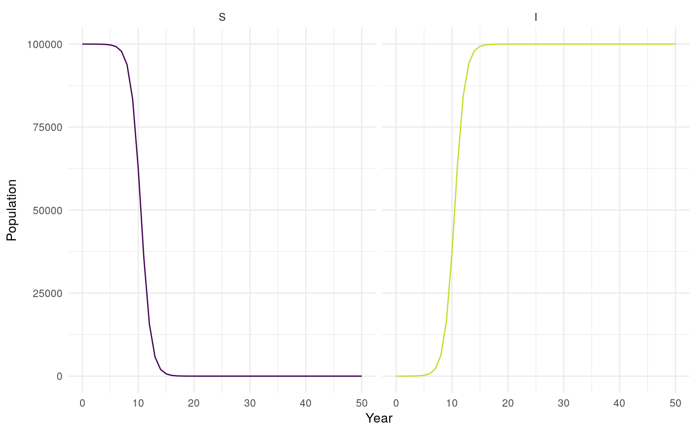
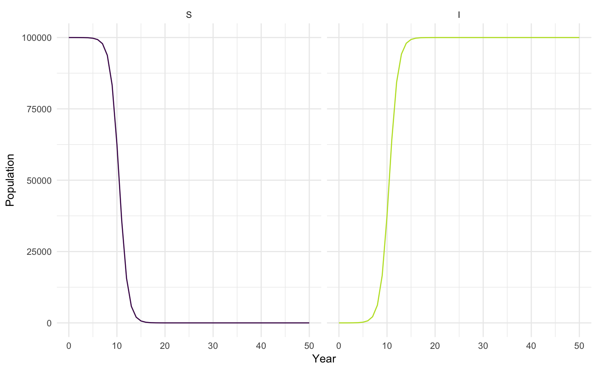

Make seperate plots for each model compartment. Assumes model output is structured
as that produced from solve_ode.
plot_model(sim, facet = TRUE, interactive = FALSE)
| sim | A tibble of model output as formated by |
|---|---|
| facet | Logical, defaults to |
| interactive | Logical, defaults to |
A Plot of each model compartments population over time.
## Intialise N = 100000 I_0 = 1 S_0 = N - I_0 R_0 = 1.1 beta = R_0 ##Time for model to run over tbegin = 0 tend = 50 times <- seq(tbegin, tend, 1) ##Vectorise input parameters <- as.matrix(c(beta = beta)) inits <- as.matrix(c(S = S_0, I = I_0)) sim <- solve_ode(model = SI_ode, inits, parameters, times, as.data.frame = TRUE) plot_model(sim, facet = FALSE, interactive = FALSE)plot_model(sim, facet = TRUE, interactive = FALSE)